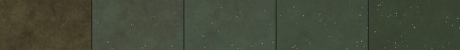
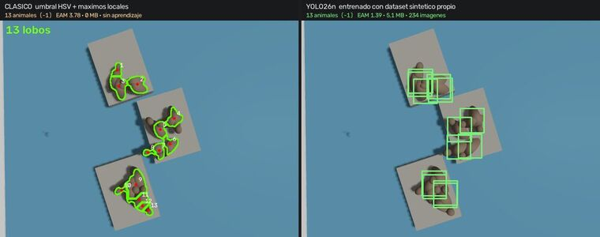

Robótica · Simulación · Visión por computadora
Experimentos documentados de punta a punta: qué se intentó, qué falló, qué se midió y con qué números. Todo corre en simulación sobre una computadora de escritorio; no hay hardware físico ni servicios en la nube detrás de estos resultados.

Septiembre de 2026 · Informe 02
Un vehículo submarino simulado releva un banco de vieira tehuelche por video-transecto. El agua no es transparente y cambia de una inmersión a la otra; el ROV se ciega a sí mismo cuando se acerca al fondo; y el cable umbilical se enreda en las algas. Arriba, en la consola, un copiloto de percepción mira los cuadros que al operador se le pasan mientras pilotea.

Agosto de 2026 · Informe 01
Un laboratorio de robótica que vive entero en contenedores. Un dron autónomo que releva una reserva simulada de lobos marinos, un dataset que se fabrica y se etiqueta solo, dos modelos entrenados con él —uno que cuenta y otro que decide qué vale la pena fotografiar— y la comparación final contra los modelos fundacionales SAM 2.1 y SAM 3 de Meta.